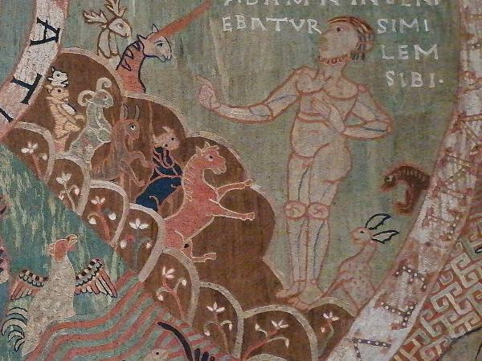

Lonely Adam

In the 3 to 4 oclock frame in the outer circle, we see the scene from Genesis 2 where Adam feels alone. God creates Adam from the earth and places him in the Garden of Eden with the beasts and birds. God presents the creatures to Adam and asks Adam to give the creatures names. At some point, Adam realizes there is not another creature like him. The caption in this scene, Adam n(on) inveniebatur similem sibi (Adam found nobody similar to himself) is a paraphrase of Gen. 2:20
The image in this frame shows Adam busily engaged in counting and naming the creatures while the text suggests what he might be thinking (I’m lonely).
Here is the Vulgate passage with an translation from this web site.
| 19 Formatis igitur Dominus Deus de humo cunctis animantibus agri et universis volatilibus caeli, adduxit ea ad Adam, ut videret quid vocaret ea; omne enim, quod vocavit Adam animae viventis, ipsum est nomen eius. 20 Appellavitque Adam nominibus suis cuncta pecora et universa volatilia caeli et omnes bestias agri; Adae vero non inveniebatur adiutor similis eius. | 19 And the Lord God having formed out of the ground all the beasts of the earth, and all the fowls of the air, brought them to Adam to see what he would call them: for whatsoever Adam called any living creature the same is its name. 20 And Adam called all the beasts by their names, and all the fowls of the air, and all the cattle of the field: but for Adam there was not found a helper like himself. |
|---|